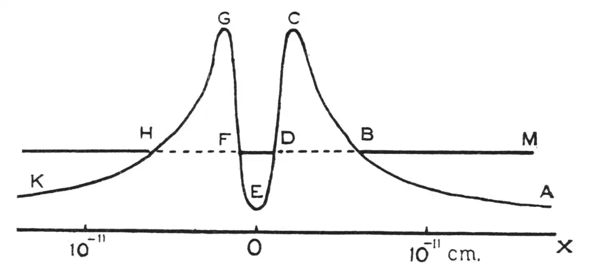

英文
英文格尼，康登
编者按
20世纪20年代，埃尔温·薛定谔在路易斯·德布罗意于1924年提出的物质可能具有波动性这个观点的基础上进行了一系列研究工作，开启了用“波动力学”描述量子理论的先河。薛定谔完全从波（或者说是波函数）的角度系统地描述了量子化粒子的行为，空间中不同位置上波的振幅代表了粒子在该处出现的概率。在这篇文章中，罗纳德·格尼和爱德华·康登敏锐地指出了薛定谔的描述对于理解放射性原子核发射出α粒子的衰变的意义。他们认为，α粒子的逃逸可以简单地理解成核内外波函数的重叠。这正是一种穿透能量壁垒的量子“隧道效应”。 英文
在1902年放射性衰变的指数律被发现后，人们很快认识到一个原子衰变的时间与这个原子以前的历史无关，而完全是由概率决定的。因为核子一定是被引力场束缚在原子核中的，所以为了解释核子的发射，我们必须假设一个从引力场到斥力场的自发转变。目前，有必要假设原子核具有某种特别的任意“不稳定性”，但在下文中，我们会指出衰变是量子力学原理的固有结果，并不需要任何特别的假设。 英文
众所周知，经典力学在分子事件中失效是由于与分子尺度相比粒子的波长较大。α粒子的波长约为分子尺度的1/105，但因为原子核的尺度比原子尺度小差不多同样的比率，波动力学的适用性似乎是有保证的。 英文
在经典力学中，一个运动粒子的轨道被严格限制在势能小于总能量的区域内。如果一个球在势阱中运动，并且其能量不足以使它翻过势垒，那么它将一直呆在势阱中，除非它以某种方式获得足以翻越势垒的能量。但在量子力学中情况并非如此，球总是有一个很小但不为零的机会可以穿透势垒从势阱中逃逸出来。 英文
如图1所示，设O表示一个原子核的中心，ABCDEFG表示一条简化了的一维势能曲线。其中，ABC段和GHK段表示核外的库仑排斥场；中间的CDEFG段表示将α粒子束缚在其轨道上的引力场。设DF是一个容许轨道，它的能量，比如说400万电子伏，由OX到DF的高度表示。我们可以近似地说，这个轨道对应的波函数从D到B呈指数衰减。此外，相应于核外运动的BM段中，粒子运动的波函数从B到D也呈指数衰减。这两个波函数在BD区域交叠的事实意味着，存在一个很小但不为零的概率，使得在DF轨道上的粒子能够沿着BM逃逸出原子核，同时获得OX到DFBM的高度所表示的动能，比如说400万电子伏。这一事件是自发的并且只受概率控制。 英文

图1 英文
衰变速率，即逃逸概率，依赖于DB和FH区域中波函数的交叠量，并且对势能曲线中C点到BDF的高度十分敏感。通过在小范围内改变这个高度，我们可以获得所有放射性衰变元素的衰变周期，从几分之一秒、109年（铀）到实质上是稳定的，各种情况都存在。（在考察分子的异构体之间的转化时，洪德发现了一个与此类似的转变周期的巨大范围，见《物理学杂志》，第43卷，第810页，1927年）如果α粒子与各种放射性核相互作用的势能曲线是类似的，我们就能定性地理解衰变速率和所发射α粒子的射程之间的盖革–努塔耳关系。对于高能α粒子，核外运动波函数与核内运动波函数交叠得更多，从而衰变速率将会更大。 英文
除了获得关于原子核神秘不稳定性的一般观点以外，以此方法我们还可以解释最近实验工作中最令人迷惑的一些结果中的一个。如果一个与铀发射出的α粒子射程相同（2.7厘米）的α粒子直接射在铀核上，它将穿透铀核；而更快的α粒子即使不是直接射在铀核上，也会穿透铀核。因此，令人不解的是，在快α粒子射在铀上的散射实验中，卢瑟福和查德威克（《哲学杂志》，第50卷，第904页，1925年）没能发现任何偏离库仑平方反比定律的迹象。但是从以上概述的模型来看，这应该是预期的结果。因为如果OX到BM的高度表示铀发射的α粒子的能量，那么射在核上的更快的粒子将仅仅沿着势垒ABC向上爬一段然后返回，其间没有经历排斥场的任何变化也没有遇到任何核子（核子在GEC区域内运动）。 英文
这里应用到的波动力学方程的特殊性质也曾被应用于强场作用下冷金属发射电子的理论中（奥本海默，《美国科学院院刊》，第14卷，第363页，1928年；福勒和诺德海姆，《皇家学会学报》，A辑，第119卷，第173页，1928年）。一般情况下，原子不会失去它的电子，因为不论相隔多远的距离，原子的引力场都吸引着电子。然而，当施加一个强场时，原子附近一个短距离范围之内，原子引力场将被颠倒。这使得合成的势能曲线类似于图1中的曲线，因此原子开始发射它们的电子。 英文
很多文献都提到了将α粒子从原子核内抛出的一种爆炸性的力量。然而，从以上描绘的过程来看，人们宁愿说α粒子几乎是神不知鬼不觉地溜出原子核的。 英文
（王锋 翻译；李军刚 审稿）